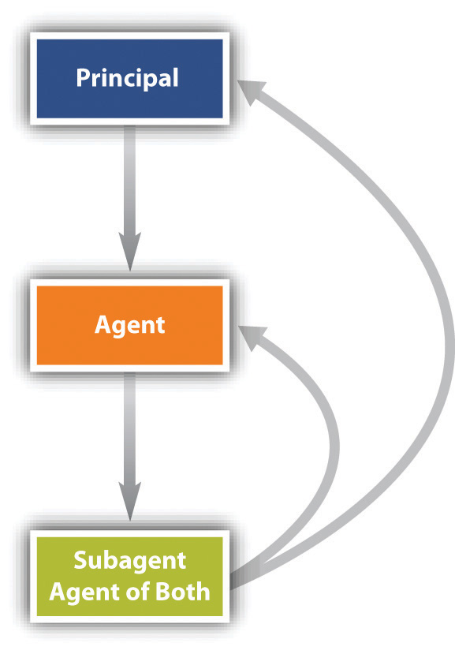

After reading this chapter, you should understand the following:
An agent is a person who acts in the name of and on behalf of another, having been given and assumed some degree of authority to do so. Most organized human activity—and virtually all commercial activity—is carried on through agency. No corporation would be possible, even in theory, without such a concept. We might say “General Motors is building cars in China,” for example, but we can’t shake hands with General Motors. “The General,” as people say, exists and works through agents. Likewise, partnerships and other business organizations rely extensively on agents to conduct their business. Indeed, it is not an exaggeration to say that agency is the cornerstone of enterprise organization. In a partnership each partner is a general agent, while under corporation law the officers and all employees are agents of the corporation.
The existence of agents does not, however, require a whole new law of torts or contracts. A tort is no less harmful when committed by an agent; a contract is no less binding when negotiated by an agent. What does need to be taken into account, though, is the manner in which an agent acts on behalf of his principal and toward a third party.
Several problematic fact scenarios recur in agency, and law has developed in response.
Consider John Alden (1599–1687), one of the most famous agents in American literature. He is said to have been the first person from the Mayflower to set foot on Plymouth Rock in 1620; he was a carpenter, a cooper (barrel maker), and a diplomat. His agency task—of interest here—was celebrated in Henry Wadsworth Longfellow’s “The Courtship of Miles Standish.” He was to woo Priscilla Mullins (d. 1680), “the loveliest maiden of Plymouth,” on behalf of Captain Miles Standish, a valiant soldier who was too shy to propose marriage. Standish turned to John Alden, his young and eloquent protégé, and beseeched Alden to speak on his behalf, unaware that Alden himself was in love with Priscilla. Alden accepted his captain’s assignment, despite the knowledge that he would thus lose Priscilla for himself, and sought out the lady. But Alden was so tongue-tied that his vaunted eloquence fell short, turned Priscilla cold toward the object of Alden’s mission, and eventually led her to turn the tables in one of the most famous lines in American literature and poetry: “Why don’t you speak for yourself, John?” John eventually did: the two were married in 1623 in Plymouth.
Let’s analyze this sequence of events in legal terms—recognizing, of course, that this example is an analogy and that the law, even today, would not impose consequences on Alden for his failure to carry out Captain Standish’s wishes. Alden was the captain’s agent: he was specifically authorized to speak in his name in a manner agreed on, toward a specified end, and he accepted the assignment in consideration of the captain’s friendship. He had, however, a conflict of interest. He attempted to carry out the assignment, but he did not perform according to expectations. Eventually, he wound up with the prize himself. Here are some questions to consider, the same questions that will recur throughout the discussion of agency:
As these questions suggest, agency law often involves three parties—the principal, the agent, and a third party. It therefore deals with three different relationships: between principal and agent, between principal and third party, and between agent and third party. These relationships can be summed up in a simple diagram (see Figure 20.1 "Agency Relationships").
Figure 20.1 Agency Relationships

In this chapter, we will consider the principal-agent side of the triangle. In the next chapter we will turn to relationships involving third parties.
There are five types of agents.
The general agentSomeone authorized to transact every kind of business for the principal. possesses the authority to carry out a broad range of transactions in the name and on behalf of the principal. The general agent may be the manager of a business or may have a more limited but nevertheless ongoing role—for example, as a purchasing agent or as a life insurance agent authorized to sign up customers for the home office. In either case, the general agent has authority to alter the principal’s legal relationships with third parties. One who is designated a general agent has the authority to act in any way required by the principal’s business. To restrict the general agent’s authority, the principal must spell out the limitations explicitly, and even so the principal may be liable for any of the agent’s acts in excess of his authority.
Normally, the general agent is a business agent, but there are circumstances under which an individual may appoint a general agent for personal purposes. One common form of a personal general agent is the person who holds another’s power of attorney. This is a delegation of authority to another to act in his stead; it can be accomplished by executing a simple form, such as the one shown in Figure 20.2 "General Power of Attorney". Ordinarily, the power of attorney is used for a special purpose—for example, to sell real estate or securities in the absence of the owner. But a person facing a lengthy operation and recuperation in a hospital might give a general power of attorney to a trusted family member or friend.
Figure 20.2 General Power of Attorney

The special agentAn agent hired by contract to carry out specifically stated activities. is one who has authority to act only in a specifically designated instance or in a specifically designated set of transactions. For example, a real estate broker is usually a special agent hired to find a buyer for the principal’s land. Suppose Sam, the seller, appoints an agent Alberta to find a buyer for his property. Alberta’s commission depends on the selling price, which, Sam states in a letter to her, “in any event may be no less than $150,000.” If Alberta locates a buyer, Bob, who agrees to purchase the property for $160,000, her signature on the contract of sale will not bind Sam. As a special agent, Alberta had authority only to find a buyer; she had no authority to sign the contract.
An agent whose reimbursement depends on his continuing to have the authority to act as an agent is said to have an agency coupled with an interestAn agency in which the agent has an interest in the property regarding which he or she is acting on the principal’s behalf. if he has a property interest in the business. A literary or author’s agent, for example, customarily agrees to sell a literary work to a publisher in return for a percentage of all monies the author earns from the sale of the work. The literary agent also acts as a collection agent to ensure that his commission will be paid. By agreeing with the principal that the agency is coupled with an interest, the agent can prevent his own rights in a particular literary work from being terminated to his detriment.
To carry out her duties, an agent will often need to appoint her own agents. These appointments may or may not be authorized by the principal. An insurance company, for example, might name a general agent to open offices in cities throughout a certain state. The agent will necessarily conduct her business through agents of her own choosing. These agents are subagentsThe agent of an agent. of the principal if the general agent had the express or implied authority of the principal to hire them. For legal purposes, they are agents of both the principal and the principal’s general agent, and both are liable for the subagent’s conduct although normally the general agent agrees to be primarily liable (see Figure 20.3 "Subagent").
Figure 20.3 Subagent
The final category of agent is the servantAn employee.. Until the early nineteenth century, any employee whose work duties were subject to an employer’s control was called a servant; we would not use that term so broadly in modern English. The Restatement (Second) of Agency, Section 2, defines a servant as “an agent employed by a master [employer] to perform service in his affairs whose physical conduct in the performance of the service is controlled or is subject to the right to control by the master.”
Not every contract for services necessarily creates a master-servant relationship. There is an important distinction made between the status of a servant and that of an independent contractorA person who is hired to accomplish a result but is not subject to specific control by the one hiring.. According to the Restatement (Second) of Agency, Section 2, “an independent contractor is a person who contracts with another to do something for him but who is not controlled by the other nor subject to the other’s right to control with respect to his physical conduct in the performance of the undertaking.” As the name implies, the independent contractor is legally autonomous. A plumber salaried to a building contractor is an employee and agent of the contractor. But a plumber who hires himself out to repair pipes in people’s homes is an independent contractor. If you hire a lawyer to settle a dispute, that person is not your employee or your servant; she is an independent contractor. The terms “agent” and “independent contractor” are not necessarily mutually exclusive. In fact, by definition, “… an independent contractor is an agent in the broad sense of the term in undertaking, at the request of another, to do something for the other. As a general rule the line of demarcation between an independent contractor and a servant is not clearly drawn.”1. Flick v. Crouch, 434 P.2d 256, 260 (OK, 1967).
This distinction between agent and independent contractor has important legal consequences for taxation, workers’ compensation, and liability insurance. For example, employers are required to withhold income taxes from their employees’ paychecks. But payment to an independent contractor, such as the plumber for hire, does not require such withholding. Deciding who is an independent contractor is not always easy; there is no single factor or mechanical answer. In Robinson v. New York Commodities Corp., an injured salesman sought workers’ compensation benefits, claiming to be an employee of the New York Commodities Corporation.Robinson v. New York Commodities Corp., 396 N.Y.S.2d 725, App. Div. (1977). But the state workmen’s compensation board ruled against him, citing a variety of factors. The claimant sold canned meats, making rounds in his car from his home. The company did not establish hours for him, did not control his movements in any way, and did not reimburse him for mileage or any other expenses or withhold taxes from its straight commission payments to him. He reported his taxes on a form for the self-employed and hired an accountant to prepare it for him. The court agreed with the compensation board that these facts established the salesman’s status as an independent contractor.
The factual situation in each case determines whether a worker is an employee or an independent contractor. Neither the company nor the worker can establish the worker’s status by agreement. As the North Dakota Workmen’s Compensation Bureau put it in a bulletin to real estate brokers, “It has come to the Bureau’s attention that many employers are requiring that those who work for them sign ‘independent contractor’ forms so that the employer does not have to pay workmen’s compensation premiums for his employees. Such forms are meaningless if the worker is in fact an employee.” Vizcaino v. Microsoft Corporation, discussed in Section 20.3.2 "Employee versus Independent Contractor", examines the distinction.
In addition to determining a worker’s status for tax and compensation insurance purposes, it is sometimes critical for decisions involving personal liability insurance policies, which usually exclude from coverage accidents involving employees of the insureds. General Accident Fire & Life Assurance Corp v. Pro Golf AssociationGeneral Accident Fire & Life Assurance Corp v. Pro Golf Association, 352 N.E.2d 441 (Ill. App. 1976). involved such a situation. The insurance policy in question covered members of the Professional Golfers Association. Gerald Hall, a golf pro employed by the local park department, was afforded coverage under the policy, which excluded “bodily injury to any employee of the insured arising out of and in the course of his employment by the insured.” That is, no employee of Hall’s would be covered (rather, any such person would have coverage under workers’ compensation statutes). Bradley Martin, age thirteen, was at the golf course for junior league play. At Hall’s request, he agreed to retrieve or “shag” golf balls to be hit during a lesson Hall was giving; he was—as Hall put it—to be compensated “either through golf instructions or money or hotdogs or whatever.” During the course of the lesson, a golf ball hit by Hall hit young Martin in the eye. If Martin was an employee, the insurance company would be liable; if he was not an employee, the insurance company would not liable. The trial court determined he was not an employee. The evidence showed: sometimes the boys who “shagged” balls got paid, got golfing instructions, or got food, so the question of compensation was ambiguous. Martin was not directed in how to perform (the admittedly simple) task of retrieving golf balls, no control was exercised over him, and no equipment was required other than a bag to collect the balls: “We believe the evidence is susceptible of different inferences.…We cannot say that the decision of the trial court is against the manifest weight of the evidence.”
The agency relationship can be created in two ways: by agreement (expressly) or by operation of law (constructively or impliedly).
Most agencies are created by contract. Thus the general rules of contract law covered in Chapter 8 "Introduction to Contract Law" through Chapter 16 "Remedies" govern the law of agency. But agencies can also be created without contract, by agreement. Therefore, three contract principles are especially important: the first is the requirement for consideration, the second for a writing, and the third concerns contractual capacity.
Agencies created by consent—agreement—are not necessarily contractual. It is not uncommon for one person to act as an agent for another without consideration. For example, Abe asks Byron to run some errands for him: to buy some lumber on his account at the local lumberyard. Such a gratuitous agencyAn agency where the agent receives no compensation. gives rise to no different results than the more common contractual agency.
Most oral agency contracts are legally binding; the law does not require that they be reduced to writing. In practice, many agency contracts are written to avoid problems of proof. And there are situations where an agency contract must be in writing: (1) if the agreed-on purpose of the agency cannot be fulfilled within one year or if the agency relationship is to last more than one year; (2) in many states, an agreement to pay a commission to a real estate broker; (3) in many states, authority given to an agent to sell real estate; and (4) in several states, contracts between companies and sales representatives.
Even when the agency contract is not required to be in writing, contracts that agents make with third parties often must be in writing. Thus Section 2-201 of the Uniform Commercial Code specifically requires contracts for the sale of goods for the price of five hundred dollars or more to be in writing and “signed by the party against whom enforcement is sought or by his authorized agent.”
A contract is void or voidable when one of the parties lacks capacity to make one. If both principal and agent lack capacity—for example, a minor appoints another minor to negotiate or sign an agreement—there can be no question of the contract’s voidability. But suppose only one or the other lacks capacity. Generally, the law focuses on the principal. If the principal is a minor or otherwise lacks capacity, the contract can be avoided even if the agent is fully competent. There are, however, a few situations in which the capacity of the agent is important. Thus a mentally incompetent agent cannot bind a principal.
Most agencies are made by contract, but agency also may arise impliedly or apparently.
In areas of social need, courts have declared an agency to exist in the absence of an agreement. The agency relationship then is said to have been implied “by operation of law.” Children in most states may purchase necessary items—food or medical services—on the parent’s account. Long-standing social policy deems it desirable for the head of a family to support his dependents, and the courts will put the expense on the family head in order to provide for the dependents’ welfare. The courts achieve this result by supposing the dependent to be the family head’s agent, thus allowing creditors to sue the family head for the debt.
Implied agencies also arise where one person behaves as an agent would and the “principal,” knowing that the “agent” is behaving so, acquiesces, allowing the person to hold himself out as an agent. Such are the basic facts in Weingart v. Directoire Restaurant, Inc. in Section 20.3.1 "Creation of Agency: Liability of Parent for Contracts Made by “Agent” Child".
Suppose Arthur is Paul’s agent, employed through October 31. On November 1, Arthur buys materials at Lumber Yard—as he has been doing since early spring—and charges them to Paul’s account. Lumber Yard, not knowing that Arthur’s employment terminated the day before, bills Paul. Will Paul have to pay? Yes, because the termination of the agency was not communicated to Lumber Yard. It appeared that Arthur was an authorized agent. This issue is discussed further in Chapter 21 "Liability of Principal and Agent; Termination of Agency".
An agent is one who acts on behalf of another. Many transactions are conducted by agents so acting. All corporate transactions, including those involving governmental organizations, are so conducted because corporations cannot themselves actually act; they are legal fictions. Agencies may be created expressly, impliedly, or apparently. Recurring issues in agency law include whether the “agent” really is such, the scope of the agent’s authority, and the duties among the parties. The five types of agents include: general agent, special agent, subagent, agency coupled with an interest, and servant (or employee). The independent contractor is not an employee; her activities are not specifically controlled by her client, and the client is not liable for payroll taxes, Social Security, and the like. But it is not uncommon for an employer to claim workers are independent contractors when in fact they are employees, and the cases are often hard-fought on the facts.
The agent owes the principal duties in two categories: the fiduciary duty and a set of general duties imposed by agency law. But these general duties are not unique to agency law; they are duties owed by any employee to the employer.
In a nonagency contractual situation, the parties’ responsibilities terminate at the border of the contract. There is no relationship beyond the agreement. This literalist approach is justified by the more general principle that we each should be free to act unless we commit ourselves to a particular course.
But the agency relationship is more than a contractual one, and the agent’s responsibilities go beyond the border of the contract. Agency imposes a higher duty than simply to abide by the contract terms. It imposes a fiduciary dutyThe duty of an agent to act always in the best interest of the principal, to avoid self-dealing.. The law infiltrates the contract creating the agency relationship and reverses the general principle that the parties are free to act in the absence of agreement. As a fiduciary of the principal, the agent stands in a position of special trust. His responsibility is to subordinate his self-interest to that of his principal. The fiduciary responsibility is imposed by law. The absence of any clause in the contract detailing the agent’s fiduciary duty does not relieve him of it. The duty contains several aspects.
A fiduciary may not lawfully profit from a conflict between his personal interest in a transaction and his principal’s interest in that same transaction. A broker hired as a purchasing agent, for instance, may not sell to his principal through a company in which he or his family has a financial interest. The penalty for breach of fiduciary duty is loss of compensation and profit and possible damages for breach of trust.
To further his objectives, a principal will usually need to reveal a number of secrets to his agent—how much he is willing to sell or pay for property, marketing strategies, and the like. Such information could easily be turned to the disadvantage of the principal if the agent were to compete with the principal or were to sell the information to those who do. The law therefore prohibits an agent from using for his own purposes or in ways that would injure the interests of the principal, information confidentially given or acquired. This prohibition extends to information gleaned from the principal though unrelated to the agent’s assignment: “[A]n agent who is told by the principal of his plans, or who secretly examines books or memoranda of the employer, is not privileged to use such information at his principal’s expense.”Restatement (Second) of Agency, Section 395. Nor may the agent use confidential information after resigning his agency. Though he is free, in the absence of contract, to compete with his former principal, he may not use information learned in the course of his agency, such as trade secrets and customer lists. Section 20.3.3 "Breach of Fiduciary Duty", Bacon v. Volvo Service Center, Inc., deals with an agent’s breach of the duty of confidentiality.
In addition to fiduciary responsibility (and whatever special duties may be contained in the specific contract) the law of agency imposes other duties on an agent. These duties are not necessarily unique to agents: a nonfiduciary employee could also be bound to these duties on the right facts.
An agent is usually taken on because he has special knowledge or skills that the principal wishes to tap. The agent is under a legal duty to perform his work with the care and skill that is “standard in the locality for the kind of work which he is employed to perform” and to exercise any special skills, if these are greater or more refined than those prevalent among those normally employed in the community. In short, the agent may not lawfully do a sloppy job.Restatement (Second) of Agency, Section 379.
In the absence of an agreement, a principal may not ordinarily dictate how an agent must live his private life. An overly fastidious florist may not instruct her truck driver to steer clear of the local bar on his way home from delivering flowers at the end of the day. But there are some jobs on which the personal habits of the agent may have an effect. The agent is not at liberty to act with impropriety or notoriety, so as to bring disrepute on the business in which the principal is engaged. A lecturer at an antialcohol clinic may be directed to refrain from frequenting bars. A bank cashier who becomes known as a gambler may be fired.
The agent must keep accurate financial records, take receipts, and otherwise act in conformity to standard business practices.
This duty states a truism but is one for which there are limits. A principal’s wishes may have been stated ambiguously or may be broad enough to confer discretion on the agent. As long as the agent acts reasonably under the circumstances, he will not be liable for damages later if the principal ultimately repudiates what the agent has done: “Only conduct which is contrary to the principal’s manifestations to him, interpreted in light of what he has reason to know at the time when he acts,…subjects the agent to liability to the principal.”Restatement (Second) of Agency, Section 383.
The principal says to the agent, “Keep working until the job is done.” The agent is not obligated to go without food or sleep because the principal misapprehended how long it would take to complete the job. Nor should the agent continue to expend the principal’s funds in a quixotic attempt to gain business, sign up customers, or produce inventory when it is reasonably clear that such efforts would be in vain.
As a general rule, the agent must obey reasonable directions concerning the manner of performance. What is reasonable depends on the customs of the industry or trade, prior dealings between agent and principal, and the nature of the agreement creating the agency. A principal may prescribe uniforms for various classes of employees, for instance, and a manufacturing company may tell its sales force what sales pitch to use on customers. On the other hand, certain tasks entrusted to agents are not subject to the principal’s control; for example, a lawyer may refuse to permit a client to dictate courtroom tactics.
Because the principal cannot be every place at once—that is why agents are hired, after all—much that is vital to the principal’s business first comes to the attention of agents. If the agent has actual notice or reason to know of information that is relevant to matters entrusted to him, he has a duty to inform the principal. This duty is especially critical because information in the hands of an agent is, under most circumstances, imputed to the principal, whose legal liabilities to third persons may hinge on receiving information in timely fashion. Service of process, for example, requires a defendant to answer within a certain number of days; an agent’s failure to communicate to the principal that a summons has been served may bar the principal’s right to defend a lawsuit. The imputation to the principal of knowledge possessed by the agent is strict: even where the agent is acting adversely to the principal’s interests—for example, by trying to defraud his employer—a third party may still rely on notification to the agent, unless the third party knows the agent is acting adversely.
In Grip Nut Co. v. Sharp, Sharp made a deal with Grip Nut Company that in return for a salary and bonuses as company president, he would assign to the company any inventions he made.Grip Nut Co. v. Sharp, 150 F.2d 192 (7th Cir. 1945). When the five-year employment contract expired, Sharp continued to serve as chief executive officer, but no new contract was negotiated concerning either pay or rights to inventions. During the next ten years, Sharp invented a number of new products and developed new machinery to manufacture them; patent rights went to the company. However, he made one invention with two other employees and they assigned the patent to him. A third employee invented a safety device and also assigned the patent to Sharp. At one time, Sharp’s son invented a leakproof bolt and a process to manufacture it; these, too, were assigned to Sharp. These inventions were developed in the company’s plants at its expense.
When Sharp died, his family claimed the rights to the inventions on which Sharp held assignments and sued the company, which used the inventions, for patent infringement. The family reasoned that after the expiration of the employment contract, Sharp was employed only in a managerial capacity, not as an inventor. The court disagreed and invoked the shop rights doctrineThe rights of a company to exploit inventions made by employees on company time and resources., under which an invention “developed and perfected in [a company’s] plant with its time, materials, and appliances, and wholly at its expense” may be used by the company without payment of royalties: “Because the servant uses his master’s time, facilities and materials to attain a concrete result, the employer is entitled to use that which embodies his own property and to duplicate it as often as he may find occasion to employ similar appliances in his business.” The company would have been given complete ownership of the patents had there been an express or implied (e.g., the employee is hired to make inventions) contract to this effect between Sharp and the company.
In this category, we may note that the principal owes the agent duties in contract, tort, and—statutorily—workers’ compensation law.
The fiduciary relationship of agent to principal does not run in reverse—that is, the principal is not the agent’s fiduciary. Nevertheless, the principal has a number of contractually related obligations toward his agent.
These duties are analogues of many of the agent’s duties that we have just examined. In brief, a principal has a duty “to refrain from unreasonably interfering with [an agent’s] work.”Restatement (Second) of Agency, Section 434. The principal is allowed, however, to compete with the agent unless the agreement specifically prohibits it. The principal has a duty to inform his agent of risks of physical harm or pecuniary loss that inhere in the agent’s performance of assigned tasks. Failure to warn an agent that travel in a particular neighborhood required by the job may be dangerous (a fact unknown to the agent but known to the principal) could under common law subject the principal to a suit for damages if the agent is injured while in the neighborhood performing her job. A principal is obliged to render accounts of monies due to agents; a principal’s obligation to do so depends on a variety of factors, including the degree of independence of the agent, the method of compensation, and the customs of the particular business. An agent’s reputation is no less valuable than a principal’s, and so an agent is under no obligation to continue working for one who sullies it.
Under the traditional employment-at-will doctrine, an employee who is not hired for a specific period can be fired at any time, for any reason (except bad reasons: an employee cannot be fired, for example, for reporting that his employers paper mill is illegally polluting groundwater). This doctrine has been much criticized.
Agents commonly spend money pursuing the principal’s business. Unless the agreement explicitly provides otherwise, the principal has a duty to indemnify or reimburse the agent. A familiar form of indemnity is the employee expense account.
The employer owes the employee—any employee, not just agents—certain statutorily imposed tort and workers’ compensation duties.
Andy, who works in a dynamite factory, negligently stores dynamite in the wrong shed. Andy warns his fellow employee Bill that he has done so. Bill lights up a cigarette near the shed anyway, a spark lands on the ground, the dynamite explodes, and Bill is injured. May Bill sue his employer to recover damages? At common law, the answer would be no—three times no. First, the “fellow-servant” rule would bar recovery because the employer was held not to be responsible for torts committed by one employee against another. Second, Bill’s failure to heed Andy’s warning and his decision to smoke near the dynamite amounted to contributory negligence. Hence even if the dynamite had been negligently stored by the employer rather than by a fellow employee, the claim would have been dismissed. Third, the courts might have held that Bill had “assumed the risk”: since he was aware of the dangers, it would not be fair to saddle the employer with the burden of Bill’s actions.
The three common-law rules just mentioned ignited intense public fury by the turn of the twentieth century. In large numbers of cases, workers who were mutilated or killed on the job found themselves and their families without recompense. Union pressure and grass roots lobbying led to workers’ compensationLaws imposing strict employer liability for injuries sustained by employees in the scope of employment. acts—statutory enactments that dramatically overhauled the law of torts as it affected employees.
Workers’ compensation is a no-fault system. The employee gives up the right to sue the employer (and, in some states, other employees) and receives in exchange predetermined compensation for a job-related injury, regardless of who caused it. This trade-off was felt to be equitable to employer and employee: the employee loses the right to seek damages for pain and suffering—which can be a sizable portion of any jury award—but in return he can avoid the time-consuming and uncertain judicial process and assure himself that his medical costs and a portion of his salary will be paid—and paid promptly. The employer must pay for all injuries, even those for which he is blameless, but in return he avoids the risk of losing a big lawsuit, can calculate his costs actuarially, and can spread the risks through insurance.
Most workers’ compensation acts provide 100 percent of the cost of a worker’s hospitalization and medical care necessary to cure the injury and relieve him from its effects. They also provide for payment of lost wages and death benefits. Even an employee who is able to work may be eligible to receive compensation for specific injuries. Part of the table of benefits for specific injuries under the Kansas statute is shown in Note 20.16 "Kansas Workers’ Compensation Benefits for Specific Injuries".
Article 5.—Workers’ Compensation
44-510d. Compensation for certain permanent partial disabilities; schedule. If there is an award of permanent disability as a result of the injury there shall be a presumption that disability existed immediately after the injury and compensation is to be paid for not to exceed the number of weeks allowed in the following schedule:
(1) For loss of a thumb, 60 weeks.
(2) For the loss of a first finger, commonly called the index finger, 37 weeks.
(3) For the loss of a second finger, 30 weeks.
(4) For the loss of a third finger, 20 weeks.
(5) For the loss of a fourth finger, commonly called the little finger, 15 weeks.
(6) Loss of the first phalange of the thumb or of any finger shall be considered to be equal to the loss of 1/2 of such thumb or finger, and the compensation shall be 1/2 of the amount specified above. The loss of the first phalange and any part of the second phalange of any finger, which includes the loss of any part of the bone of such second phalange, shall be considered to be equal to the loss of 2/3 of such finger and the compensation shall be 2/3 of the amount specified above. The loss of the first phalange and any part of the second phalange of a thumb which includes the loss of any part of the bone of such second phalange, shall be considered to be equal to the loss of the entire thumb. The loss of the first and second phalanges and any part of the third proximal phalange of any finger, shall be considered as the loss of the entire finger. Amputation through the joint shall be considered a loss to the next higher schedule.
(7) For the loss of a great toe, 30 weeks.
(8) For the loss of any toe other than the great toe, 10 weeks.
(9) The loss of the first phalange of any toe shall be considered to be equal to the loss of 1/2 of such toe and the compensation shall be 1/2 of the amount above specified.
(10) The loss of more than one phalange of a toe shall be considered to be equal to the loss of the entire toe.
(11) For the loss of a hand, 150 weeks.
(12) For the loss of a forearm, 200 weeks.
(13) For the loss of an arm, excluding the shoulder joint, shoulder girdle, shoulder musculature or any other shoulder structures, 210 weeks, and for the loss of an arm, including the shoulder joint, shoulder girdle, shoulder musculature or any other shoulder structures, 225 weeks.
(14) For the loss of a foot, 125 weeks.
(15) For the loss of a lower leg, 190 weeks.
(16) For the loss of a leg, 200 weeks.
(17) For the loss of an eye, or the complete loss of the sight thereof, 120 weeks.
The injured worker is typically entitled to two-thirds his or her average pay, not to exceed some specified maximum, for two hundred weeks. If the loss is partial (like partial loss of sight), the recovery is decreased by the percentage still usable.
Although workers’ compensation laws are on the books of every state, in two states—New Jersey and Texas—they are not compulsory. In those states the employer may decline to participate, in which event the employee must seek redress in court. But in those states permitting an employer election, the old common-law defenses (fellow-servant rule, contributory negligence, and assumption of risk) have been statutorily eliminated, greatly enhancing an employee’s chances of winning a suit. The incentive is therefore strong for employers to elect workers’ compensation coverage.
Those frequently excluded are farm and domestic laborers and public employees; public employees, federal workers, and railroad and shipboard workers are covered under different but similar laws. The trend has been to include more and more classes of workers. Approximately half the states now provide coverage for household workers, although the threshold of coverage varies widely from state to state. Some use an earnings test; other states impose an hours threshold. People who fall within the domestic category include maids, baby-sitters, gardeners, and handymen but generally not plumbers, electricians, and other independent contractors.
There are three general methods by which employers may comply with workers’ compensation laws. First, they may purchase employer’s liability and workers’ compensation policies through private commercial insurance companies. These policies consist of two major provisions: payment by the insurer of all claims filed under workers’ compensation and related laws (such as occupational disease benefits) and coverage of the costs of defending any suits filed against the employer, including any judgments awarded. Since workers’ compensation statutes cut off the employee’s right to sue, how can such a lawsuit be filed? The answer is that there are certain exceptions to the ban: for instance, a worker may sue if the employer deliberately injures an employee.
The second method of compliance with workers’ compensation laws is to insure through a state fund established for the purpose. The third method is to self-insure. The laws specify conditions under which companies may resort to self-insurance, and generally only the largest corporations qualify to do so. In short, workers’ compensation systems create a tax on employers with which they are required (again, in most states) to buy insurance. The amount the employer has to pay for the insurance depends on the number and seriousness of claims made—how dangerous the work is. For example, Washington State’s 2011 proposed hourly rates for employers to purchase insurance include these items: for egg and poultry farms, $1.16 per hour; shake and shingle mills, $18.06 per hour; asphalt paving, $2.87 per hour; lawn care maintenance, $1.22 per hour; plastic products manufacturing, $0.87 per hour; freight handling, $1.81 per hour; supermarkets, $0.76; restaurants, $0.43; entertainers and dancers, $7.06; colleges and universities, $0.31.Washington State Department of Labor & Industries, Rates for Workers’ Compensation, Proposed 2011 Rates, http://www.lni.wa.gov/ClaimsIns/Insurance/RatesRisk/Check/RatesHistory.
There are a number of legal issues that recur in workers’ compensation cases. The problem is, from the employer’s point of view, that the cost of buying insurance is tied to the number of claims made. The employer therefore has reason to assert the injured employee is not eligible for compensation. Recurring legal issues include the following:
The agent owes the principal two categories of duties: fiduciary and general. The fiduciary duty is the duty to act always in the interest of the principal; the duty here includes that to avoid self-dealing and to preserve confidential information. The general duty owed by the agent encompasses the sorts of obligations any employee might have: the duty of skill and care, of good conduct, to keep and render accounts, to not attempt the impossible or impracticable, to obey, and to give information. The shop rights doctrine provides that inventions made by an employee using the employer’s resources and on the employer’s time belong to the employer.
The principal owes the agent duties too. These may be categorized as contract and tort duties. The contract duties are to warn the agent of hazards associated with the job, to avoid interfering with the agent’s performance of his job, to render accounts of money due the agent, and to indemnify the agent for business expenses according to their agreement. The tort duty owed by the principal to the agent—employee—is primarily the statutorily imposed duty to provide workers’ compensation for injuries sustained on the job. In reaction to common-law defenses that often exonerated the employer from liability for workers’ injuries, the early twentieth century saw the rise of workers’ compensation statutes. These require the employer to provide no-fault insurance coverage for any injury sustained by the employee on the job. Because the employer’s insurance costs are claims rated (i.e., the cost of insurance depends on how many claims are made), the employer scrutinizes claims. A number of recurring legal issues arise: Is the injury work related? Is the injured person an employee? What constitutes an “injury”?
Weingart v. Directoire Restaurant, Inc.
333 N.Y.S.2d 806 (N.Y., 1972)
KASSEL, J.
The issue here is whether defendant restaurant by permitting an individual to park patrons’ cars thereby held him out as its “employee” for such purposes. Admittedly, this individual, one Buster Douglas, is not its employee in the usual sense but with the knowledge of defendant, he did station himself in front of its restaurant, wore a doorman’s uniform and had been parking its customers’ autos. The parties stipulated that if he were held to be defendant’s employee, this created a bailment between the parties [and the “employer” would have to rebut a presumption of negligence if the customer’s property was not returned to the customer].
On April 20, 1968, at about 10 P.M., plaintiff drove his 1967 Cadillac Coupe de Ville to the door of the Directoire Restaurant at 160 East 48th Street in Manhattan. Standing in front of the door was Buster Douglas, dressed in a self-supplied uniform, comprised of a regular doorman’s cap and matching jacket. Plaintiff gave the keys to his vehicle to Douglas and requested that he park the car. He gave Douglas a $1.00 tip and received a claim check. Plaintiff then entered defendant’s restaurant, remained there for approximately 45 minutes and when he departed, Douglas was unable to locate the car which was never returned to plaintiff.
At the time of this occurrence, the restaurant had been open for only nine days, during which time plaintiff had patronized the restaurant on at least one prior occasion.
Defendant did not maintain any sign at its entrance or elsewhere that it would provide parking for its customers (nor, apparently, any sign warning to the contrary).
Buster Douglas parked cars for customers of defendant’s restaurant and at least three or four other restaurants on the block. He stationed himself in front of each restaurant during the course of an evening and was so engaged during the evening of April 20, 1968. Defendant clearly knew of and did not object to Douglas’ activities outside its restaurant. Defendant’s witness testified at an examination before trial:
Q. Did anybody stand outside your restaurant in any capacity whatsoever?
A. There was a man out there parking cars for the block, but he was in no way connected with us or anything like that. He parked cars for the Tamburlaine and also for the Chateau Madrid, Nepentha and a few places around the block.
Q. Did you know that this gentleman was standing outside your restaurant?
A. Yes, I knew he was there.
Q. How did you know that he was standing outside your restaurant?
A. Well, I knew the man’s face because I used to work in a club on 55th Street and he was there. When we first opened up here, we didn’t know if we would have a doorman or have parking facilities or what we were going to do at that time. We just let it hang and I told this Buster, Buster was his name, that you are a free agent and you do whatever you want to do. I am tending bar in the place and what you do in the street is up to you, I will not stop you, but we are not hiring you or anything like that, because at that time, we didn’t know what we were going to use the parking lot or get a doorman and put on a uniform or what.
These facts establish to the court’s satisfaction that, although Douglas was not an actual employee of the restaurant, defendant held him out as its authorized agent or “employee” for the purpose of parking its customers’ cars, by expressly consenting to his standing, in uniform, in front of its door to receive customers, to park their cars and issue receipts therefor—which services were rendered without charge to the restaurant’s customers, except for any gratuity paid to Douglas. Clearly, under these circumstances, apparent authority has been shown and Douglas acted within the scope of this authority.
Plaintiff was justified in assuming that Douglas represented the restaurant in providing his services and that the restaurant had placed him there for the convenience of its customers. A restaurateur knows that this is the impression created by allowing a uniformed attendant to so act. Facility in parking is often a critical consideration for a motorist in selecting a restaurant in midtown Manhattan, and the Directoire was keenly aware of this fact as evidenced by its testimony that the management was looking into various other possibilities for solving customers’ parking problems.
There was no suitable disclaimer posted outside the restaurant that it had no parking facilities or that entrusting one’s car to any person was at the driver’s risk. It is doubtful that any prudent driver would entrust his car to a strange person on the street, if he thought that the individual had no authorization from the restaurant or club or had no connection with it, but was merely an independent operator with questionable financial responsibility.
The fact that Douglas received no compensation directly from defendant is not material. Each party derived a benefit from the arrangement: Douglas being willing to work for gratuities from customers, and the defendant, at no cost to itself, presenting the appearance of providing the convenience of free parking and doorman services to its patrons. In any case, whatever private arrangements existed between the restaurant and Douglas were never disclosed to the customers.
Even if such person did perform these services for several restaurants, it does not automatically follow that he is a freelance entrepreneur, since a shared employee working for other small or moderately sized restaurants in the area would seem a reasonable arrangement, in no way negating the authority of the attendant to act as doorman and receive cars for any one of these places individually.
The case most analogous to the instant one is Klotz v. El Morocco [Citation, 1968], and plaintiff here relies on it. That case similarly involved the theft of a car parked by a uniformed individual standing in front of defendant’s restaurant who, although not employed by it, parked vehicles for its patrons with the restaurant’s knowledge and consent. Defendant here attempts to distinguish this case principally upon the ground that the parties in El Morocco stipulated that the ‘doorman’ was an agent or employee of the defendant acting within the scope of his authority. However, the judge made an express finding to that effect: ‘* * * there was sufficient evidence in plaintiff’s case on which to find DiGiovanni, the man in the uniform, was acting within the scope of his authority as agent of defendant.” Defendant here also points to the fact that in Klotz DiGiovanni placed patrons’ car keys on a rack inside El Morocco; however, this is only one fact to be considered in finding a bailment and is, to me, more relevant to the issue of the degree of care exercised.
When defendant’s agent failed to produce plaintiff’s automobile, a presumption of negligence arose which now requires defendant to come forward with a sufficient explanation to rebut this presumption. [Citation] The matter should be set down for trial on the issues of due care and of damages.
Vizcaino v. Microsoft Corp.
97 F.3d 1187 (9th Cir. 1996)
Reinhardt, J.
Large corporations have increasingly adopted the practice of hiring temporary employees or independent contractors as a means of avoiding payment of employee benefits, and thereby increasing their profits. This practice has understandably led to a number of problems, legal and otherwise. One of the legal issues that sometimes arises is exemplified by this lawsuit. The named plaintiffs, who were classified by Microsoft as independent contractors, seek to strip that label of its protective covering and to obtain for themselves certain benefits that the company provided to all of its regular or permanent employees. After certifying the named plaintiffs as representatives of a class of “common-law employees,” the district court granted summary judgment to Microsoft on all counts. The plaintiffs…now appeal as to two of their claims: a) the claim…that they are entitled to savings benefits under Microsoft’s Savings Plus Plan (SPP); and b) that…they are entitled to stock-option benefits under Microsoft’s Employee Stock Purchase Plan (ESPP). In both cases, the claims are based on their contention that they are common-law employees.
Microsoft, one of the country’s fastest growing and most successful corporations and the world’s largest software company, produces and sells computer software internationally. It employs a core staff of permanent employees. It categorizes them as “regular employees” and offers them a wide variety of benefits, including paid vacations, sick leave, holidays, short-term disability, group health and life insurance, and pensions, as well as the two benefits involved in this appeal. Microsoft supplements its core staff of employees with a pool of individuals to whom it refuses to pay fringe benefits. It previously classified these individuals as “independent contractors” or “freelancers,” but prior to the filing of the action began classifying them as “temporary agency employees.” Freelancers were hired when Microsoft needed to expand its workforce to meet the demands of new product schedules. The company did not, of course, provide them with any of the employee benefits regular employees receive.
The plaintiffs…performed services as software testers, production editors, proofreaders, formatters and indexers. Microsoft fully integrated the plaintiffs into its workforce: they often worked on teams along with regular employees, sharing the same supervisors, performing identical functions, and working the same core hours. Because Microsoft required that they work on site, they received admittance card keys, office equipment and supplies from the company.
Freelancers and regular employees, however, were not without their obvious distinctions. Freelancers wore badges of a different color, had different electronic-mail addresses, and attended a less formal orientation than that provided to regular employees. They were not permitted to assign their work to others, invited to official company functions, or paid overtime wages. In addition, they were not paid through Microsoft’s payroll department. Instead, they submitted invoices for their services, documenting their hours and the projects on which they worked, and were paid through the accounts receivable department.
The plaintiffs were told when they were hired that, as freelancers, they would not be eligible for benefits. None has contended that Microsoft ever promised them any benefits individually. All eight named plaintiffs signed [employment agreements] when first hired by Microsoft or soon thereafter. [One] included a provision that states that the undersigned “agrees to be responsible for all federal and state taxes, withholding, social security, insurance and other benefits.” The [other one] states that “as an Independent Contractor to Microsoft, you are self-employed and are responsible to pay all your own insurance and benefits.” Eventually, the plaintiffs learned of the various benefits being provided to regular employees from speaking with them or reading various Microsoft publications concerning employee benefits.
In 1989 and 1990, the Internal Revenue Service (IRS)[,]…applying common-law principles defining the employer-employee relationship, concluded that Microsoft’s freelancers were not independent contractors but employees for withholding and employment tax purposes, and that Microsoft would thereafter be required to pay withholding taxes and the employer’s portion of Federal Insurance Contribution Act (FICA) tax. Microsoft agreed.…
After learning of the IRS rulings, the plaintiffs sought various employee benefits, including those now at issue: the ESPP and SPP benefits. The SPP…is a cash or deferred salary arrangement under § 401k of the Internal Revenue Code that permits Microsoft’s employees to save and invest up to fifteen percent of their income through tax-deferred payroll deductions.…Microsoft matches fifty percent of the employee’s contribution in any year, with [a maximum matching contribution]. The ESPP…permits employees to purchase company stock [with various rules].
Microsoft rejected the plaintiffs’ claims for benefits, maintaining that they were independent contractors who were personally responsible for all their own benefits.…
The plaintiffs brought this action, challenging the denial of benefits.
Microsoft contends that the extrinsic evidence, including the [employment agreements], demonstrates its intent not to provide freelancers or independent contractors with employee benefits[.]…We have no doubt that the company did not intend to provide freelancers or independent contractors with employee benefits, and that if the plaintiffs had in fact been freelancers or independent contractors, they would not be eligible under the plan. The plaintiffs, however, were not freelancers or independent contractors. They were common-law employees, and the question is what, if anything, Microsoft intended with respect to persons who were actually common-law employees but were not known to Microsoft to be such. The fact that Microsoft did not intend to provide benefits to persons who it thought were freelancers or independent contractors sheds little or no light on that question.…
Microsoft’s argument, drawing a distinction between common-law employees on the basis of the manner in which they were paid, is subject to the same vice as its more general argument. Microsoft regarded the plaintiffs as independent contractors during the relevant period and learned of their common-law-employee status only after the IRS examination. They were paid through the accounts receivable department rather than the payroll department because of Microsoft’s mistaken view as to their legal status. Accordingly, Microsoft cannot now contend that the fact that they were paid through the accounts receivable department demonstrates that the company intended to deny them the benefits received by all common-law employees regardless of their actual employment status. Indeed, Microsoft has pointed to no evidence suggesting that it ever denied eligibility to any employees, whom it understood to be common-law employees, by paying them through the accounts receivable department or otherwise.
We therefore construe the ambiguity in the plan against Microsoft and hold that the plaintiffs are eligible to participate under the terms of the SPP.
[Next, regarding the ESPP] we hold that the plaintiffs…are covered by the specific provisions of the ESPP. We apply the “objective manifestation theory of contracts,” which requires us to “impute an intention corresponding to the reasonable meaning of a person’s words and acts.” [Citation] Through its incorporation of the tax code provision into the plan, Microsoft manifested an objective intent to make all common-law employees, and hence the plaintiffs, eligible for participation. The ESPP specifically provides:
It is the intention of the Company to have the Plan qualify as an “employee stock purchase plan” under Section 423 of the Internal Revenue Code of 1954. The provisions of the Plan shall, accordingly, be construed so as to extend and limit participation in a manner consistent with the requirements of that Section of the Code. (emphasis added)
[T]he ESPP, when construed in a manner consistent with the requirements of § 423, extends participation to all common-law employees not covered by one of the express exceptions set forth in the plan. Accordingly, we find that the ESPP, through its incorporation of § 423, expressly extends eligibility for participation to the plaintiff class and affords them the same options to acquire stock in the corporation as all other employees.
Microsoft next contends that the [employment agreements] signed by the plaintiffs render them ineligible to participate in the ESPP. First, the label used in the instruments signed by the plaintiffs does not control their employment status. Second, the employment instruments, if construed to exclude the plaintiffs from receiving ESPP benefits, would conflict with the plan’s express incorporation of § 423. Although Microsoft may have generally intended to exclude individuals who were in fact independent contractors, it could not, consistent with its express intention to extend participation in the ESPP to all common-law employees, have excluded the plaintiffs. Indeed, such an exclusion would defeat the purpose of including § 423 in the plan, because the exclusion of common-law employees not otherwise accepted would result in the loss of the plan’s tax qualification.
Finally, Microsoft maintains that the plaintiffs are not entitled to ESPP benefits because the terms of the plan were never communicated to them and they were therefore unaware of its provisions when they performed their employment services.…In any event, to the extent that knowledge of an offer of benefits is a prerequisite, it is probably sufficient that Microsoft publicly promulgated the plan. In [Citation], the plaintiff was unaware of the company’s severance plan until shortly before his termination. The Oklahoma Supreme Court concluded nonetheless that publication of the plan was “the equivalent of constructive knowledge on the part of all employees not specifically excluded.”
We are not required to rely, however, on the [this] analysis or even on Microsoft’s own unwitting concession. There is a compelling reason, implicit in some of the preceding discussion, that requires us to reject the company’s theory that the plaintiffs’ entitlement to ESPP benefits is defeated by their previous lack of knowledge regarding their rights. It is “well established” that an optionor may not rely on an optionee’s failure to exercise an option when he has committed any act or failed to perform any duty “calculated to cause the optionee to delay in exercising the right.” [Citation] “[T]he optionor may not make statements or representations calculated to cause delay, [or] fail to furnish [necessary] information.…” Similarly, “[I]t is a principle of fundamental justice that if a promisor is himself the cause of the failure of performance, either of an obligation due him or of a condition upon which his own liability depends, he cannot take advantage of the failure.” [Citation]…
Applying these principles, we agree with the magistrate judge, who concluded that Microsoft, which created a benefit to which the plaintiffs were entitled, could not defend itself by arguing that the plaintiffs were unaware of the benefit, when its own false representations precluded them from gaining that knowledge. Because Microsoft misrepresented both the plaintiffs’ actual employment status and their eligibility to participate in the ESPP, it is responsible for their failure to know that they were covered by the terms of the offer. It may not now take advantage of that failure to defeat the plaintiffs’ rights to ESPP benefits. Thus, we reject Microsoft’s final argument.
Conclusion
For the reasons stated, the district court’s grant of summary judgment in favor of Microsoft and denial of summary judgment in favor of the plaintiffs is REVERSED and the case REMANDED for the determination of any questions of individual eligibility for benefits that may remain following issuance of this opinion and for calculation of the damages or benefits due the various class members.
Bacon v. Volvo Service Center, Inc.
597 S.E.2d 440 (Ga. App. 2004)
Smith, J.
[This appeal is] taken in an action that arose when two former employees left an existing business and began a new, competing business.…Bacon and Johnson, two former employees of Volvo Service Center, Inc. (VSC), and the new company they formed, South Gwinnett Volvo Service, Ltd. (SGVS), appeal from the trial court’s denial of their motion for judgment notwithstanding the jury’s verdict in favor of VSC.…
VSC filed suit against appellants, alleging a number of claims arising from the use by Bacon, who had been a service technician at VSC, of VSC’s customer list, and his soliciting Johnson, a service writer, and another VSC employee to join SGVS. SGVS moved for a directed verdict on certain claims at the close of plaintiff’s evidence and at the close of the case, which motions were denied. The jury was asked to respond to specific interrogatories, and it found for VSC and against all three appellants on VSC’s claim for misappropriation of trade secrets. The jury also found for plaintiff against Bacon for breach of fiduciary duty,…tortious interference with business relations, employee piracy, and conversion of corporate assets. The jury awarded VSC attorney fees, costs, and exemplary damages stemming from the claim for misappropriation of trade secrets. Judgment was entered on the jury’s verdict, and appellants’ motion for j.n.o.v. was denied. This appeal ensued. We find that VSC did not meet its burden of proof as to the claims for misappropriation of trade secrets, breach of fiduciary duty, or employee piracy, and the trial court should have granted appellants’ motion for j.n.o.v.
Construed to support the jury’s verdict, the evidence of record shows that Bacon was a technician at VSC when he decided to leave and open a competing business. Before doing so, he printed a list of VSC’s customers from one of VSC’s two computers. Computer access was not password restricted, was easy to use, and was used by many employees from time to time.
About a year after he left VSC, Bacon gave Johnson and another VSC employee an offer of employment at his new Volvo repair shop, which was about to open. Bacon and Johnson advertised extensively, and the customer list was used to send flyers to some VSC customers who lived close to the new shop’s location. These activities became the basis for VSC’s action against Bacon, Johnson, and their new shop, SGVS.…
1. The Georgia Trade Secrets Act of 1990, [Citation], defines a “trade secret” as
information, without regard to form, including, but not limited to,…a list of actual or potential customers or suppliers which is not commonly known by or available to the public and which information:
(A) Derives economic value, actual or potential, from not being generally known to, and not being readily ascertainable by proper means by, other persons who can obtain economic value from its disclosure or use; and
(B) Is the subject of efforts that are reasonable under the circumstances to maintain its secrecy.
If an employer does not prove both prongs of this test, it is not entitled to protection under the Act. Our Supreme Court held in [Citation, 1991] for instance, that information was not a trade secret within the meaning of the Act because no evidence showed that the employer “made reasonable efforts under the circumstances…to maintain the confidentiality of the information it sought to protect.”
While a client list may be subject to confidential treatment under the Georgia Trade Secrets Act, the information itself is not inherently confidential. Customers are not trade secrets. Confidentiality is afforded only where the customer list is not generally known or ascertainable from other sources and was the subject of reasonable efforts to maintain its secrecy.…
Here, VSC took no precautions to maintain the confidentiality of its customer list. The information was on both computers, and it was not password-protected. Moreover, the same information was available to the technicians through the repair orders, which they were permitted to retain indefinitely while Bacon was employed there. Employees were not informed that the information was confidential. Neither Bacon nor Johnson was required to sign a confidentiality agreement as part of his employment.
Because no evidence was presented from which the jury could have concluded that VSC took any steps, much less reasonable ones, to protect the confidentiality of its customer list, a material requirement for trade secret status was not satisfied. The trial court should have granted appellants’ motion for j.n.o.v.
2. To prove tortious interference with business relations, “a plaintiff must show defendant: (1) acted improperly and without privilege, (2) acted purposely and with malice with the intent to injure, (3) induced a third party or parties not to enter into or continue a business relationship with the plaintiff, and (4) caused plaintiff financial injury.” [Citation] But “[f]air competition is always legal.” [Citations] Unless an employee has executed a valid non-compete or non-solicit covenant, he is not barred from soliciting customers of his former employer on behalf of a new employer. [Citation]
No evidence was presented that Bacon acted “improperly,” that any of VSC’s former customers switched to SGVS because of any improper act by Bacon, or that these customers would have continued to patronize VSC but for Bacon’s solicitations. Therefore, it was impossible for a jury to calculate VSC’s financial damage, if any existed.
3. With regard to VSC’s claim for breach of fiduciary duty, “[a]n employee breaches no fiduciary duty to the employer simply by making plans to enter a competing business while he is still employed. Even before the termination of his agency, he is entitled to make arrangements to compete and upon termination of employment immediately compete.” [Citation] He cannot solicit customers for a rival business or do other, similar acts in direct competition with his employer’s business before his employment ends. But here, no evidence was presented to rebut the evidence given by Bacon and Johnson that they engaged in no such practices before their employment with VSC ended. Even assuming, therefore, that a fiduciary relationship existed, no evidence was presented showing that it was breached.
4. The same is true for VSC’s claim for employee piracy. The evidence simply does not show that any employees of VSC were solicited for SGVS before Bacon left VSC’s employ.…
Judgment reversed.
Wolfe v. Sibley, Lindsay & Curr Co.
330 N.E.2d 603 (N.Y. 1975)
Wachtler, J.
This appeal involves a claim for workmen’s compensation benefits for the period during which the claimant was incapacitated by severe depression caused by the discovery of her immediate supervisor’s body after he had committed suicide.
The facts as adduced at a hearing before the Workmen’s Compensation Board are uncontroverted. The claimant, Mrs. Diana Wolfe, began her employment with the respondent department store, Sibley, Lindsay & Curr Co. in February, 1968. After working for some time as an investigator in the security department of the store she became secretary to Mr. John Gorman, the security director. It appears from the record that as head of security, Mr. Gorman was subjected to intense pressure, especially during the Christmas holidays. Mrs. Wolfe testified that throughout the several years she worked at Sibley’s Mr. Gorman reacted to this holiday pressure by becoming extremely agitated and nervous. She noted, however, that this anxiety usually disappeared when the holiday season was over. Unfortunately, Mr. Gorman’s nervous condition failed to abate after the 1970 holidays.…
Despite the fact that he followed Mrs. Wolfe’s advice to see a doctor, Mr. Gorman’s mental condition continued to deteriorate. On one occasion he left work at her suggestion because he appeared to be so nervous. This condition persisted until the morning of June 9, 1971 when according to the claimant, Mr. Gorman looked much better and even smiled and ‘tousled her hair’ when she so remarked.
A short time later Mr. Gorman called her on the intercom and asked her to call the police to room 615. Mrs. Wolfe complied with this request and then tried unsuccessfully to reach Mr. Gorman on the intercom. She entered his office to find him lying in a pool of blood caused by a self-inflicted gunshot wound in the head. Mrs. Wolfe became extremely upset and was unable to continue working that day.
She returned to work for one week only to lock herself in her office to avoid the questions of her fellow workers. Her private physician perceiving that she was beset by feelings of guilt referred her to a psychiatrist and recommended that she leave work, which she did. While at home she ruminated about her guilt in failing to prevent the suicide and remained in bed for long periods of time staring at the ceiling. The result was that she became unresponsive to her husband and suffered a weight loss of 20 pounds. Her psychiatrist, Dr. Grinols diagnosed her condition as an acute depressive reaction.
After attempting to treat her in his office Dr. Grinols realized that the severity of her depression mandated hospitalization. Accordingly, the claimant was admitted to the hospital on July 9, 1971 where she remained for two months during which time she received psychotherapy and medication. After she was discharged, Dr. Grinols concluded that there had been no substantial remission in her depression and ruminative guilt and so had her readmitted for electroshock treatment. These treatments lasted for three weeks and were instrumental in her recovery. She was again discharged and, in mid-January, 1972, resumed her employment with Sibley, Lindsay & Curr.
Mrs. Wolfe’s claim for workmen’s compensation was granted by the referee and affirmed by the Workmen’s Compensation Board. On appeal the Appellate Division reversed citing its opinions in [Citations], [concluding]…that mental injury precipitated solely by psychic trauma is not compensable as a matter of law. We do not agree with this conclusion.
Workmen’s compensation, as distinguished from tort liability which is essentially based on fault, is designed to shift the risk of loss of earning capacity caused by industrial accidents from the worker to industry and ultimately the consumer. In light of its beneficial and remedial character the Workmen’s Compensation Law should be construed liberally in favor of the employee [Citation].
Liability under the act is predicated on accidental injury arising out of and in the course of employment.…Applying these concepts to the case at bar we note that there is no issue raised concerning the causal relationship between the occurrence and the injury. The only testimony on this matter was given by Dr. Grinols who stated unequivocally that the discovery of her superior’s body was the competent producing cause of her condition. Nor is there any question as to the absence of physical impact. Accordingly, the focus of our inquiry is whether or not there has been an accidental injury within the meaning of the Workmen’s Compensation Law.
Since there is no statutory definition of this term we turn to the relevant decisions. These may be divided into three categories: (1) psychic trauma which produces physical injury, (2) physical impact which produces psychological injury, and (3) psychic trauma which produces psychological injury. As to the first class our court has consistently recognized the principle that an injury caused by emotional stress or shock may be accidental within the purview of the compensation law. [Citation] Cases falling into the second category have uniformly sustained awards to those incurring nervous or psychological disorders as a result of physical impact [Citation]. As to those cases in the third category the decisions are not as clear.…
We hold today that psychological or nervous injury precipitated by psychic trauma is compensable to the same extent as physical injury. This determination is based on two considerations. First, as noted in the psychiatric testimony there is nothing in the nature of a stress or shock situation which ordains physical as opposed to psychological injury. The determinative factor is the particular vulnerability of an individual by virtue of his physical makeup. In a given situation one person may be susceptible to a heart attack while another may suffer a depressive reaction. In either case the result is the same—the individual is incapable of functioning properly because of an accident and should be compensated under the Workmen’s Compensation Law.
Secondly, having recognized the reliability of identifying psychic trauma as a causative factor of injury in some cases and the reliability by identifying psychological injury as a resultant factor in other cases, we see no reason for limiting recovery in the latter instance to cases involving physical impact. There is nothing talismanic about physical impact.
We would note in passing that this analysis reflects the view of the majority of jurisdictions in this country and England. [Citations]…
Accordingly, the order appealed from should be reversed and the award to the claimant reinstated, with costs.
An agent is one who acts on behalf of another. The law recognizes several types of agents, including (1) the general agent, one who possesses authority to carry out a broad range of transactions in the name of and on behalf of the principal; (2) the special agent, one with authority to act only in a specifically designated instance or set of transactions; (3) the agent whose agency is coupled with an interest, one who has a property interest in addition to authority to act as an agent; (4) the subagent, one appointed by an agent with authority to do so; and (5) the servant (“employee” in modern English), one whose physical conduct is subject to control of the principal.
A servant should be distinguished from an independent contractor, whose work is not subject to the control of the principal. The difference is important for purposes of taxation, workers’ compensation, and liability insurance.
The agency relationship is usually created by contract, and sometimes governed by the Statute of Frauds, but some agencies are created by operation of law.
An agent owes his principal the highest duty of loyalty, that of a fiduciary. The agent must avoid self-dealing, preserve confidential information, perform with skill and care, conduct his personal life so as not to bring disrepute on the business for which he acts as agent, keep and render accounts, and give appropriate information to the principal.
Although the principal is not the agent’s fiduciary, the principal does have certain obligations toward the agent—for example, to refrain from interfering with the agent’s work and to indemnify. The employer’s common-law tort liability toward his employees has been replaced by the workers’ compensation system, under which the employee gives up the right to sue for damages in return for prompt payment of medical and job-loss expenses. Injuries must have been work related and the injured person must have been an employee. Courts today allow awards for psychological trauma in the absence of physical injury.
One who has authority to act only in a specifically designated instance or in a specifically designated set of transactions is called
An agency relationship may be created by
An agent’s duty to the principal includes
A person whose work is not subject to the control of the principal, but who arranges to perform a job for him is called
An employer’s liability for employees’ on-the-job injuries is generally governed by
1. c
2. d
3. c
4. d
5. b